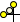

Drawing a Rectangle Element
The rectangle element allows you to create rectangles and squares on a graphic canvas.
Select the topic related to your task:
Draw a Rectangle
- You are in Design or Test mode and have a graphic open.
- On the Home tab, in the Elements group, click Rectangle.
- The mouse changes to a cross-hair cursor
 .
. - Click the canvas and drag until the desired rectangle or square is created. Release the mouse button.
- A rectangle element displays on the canvas.
Modify the Rectangle Properties
- You are in Design or Test mode, and have an existing rectangle on the canvas you want to modify.
- Select the existing rectangle you want to change.
- Navigate to the Properties View (Rectangle Properties).
- In addition to the rectangle properties, Radius X and Radius Y, all the other properties associated with the selected element display.
- Make the necessary adjustments and selections to set the properties for the rectangle.
- Click Save
 .
. - The graphic is saved with the modified rectangle element settings.
Round the Corners of a Rectangle Element
- You have a graphic open and have selected a rectangle element on the canvas.
- To round the corner angles of a rectangle, click the element’s yellow corner control handles

and drag until the proper curvature is reached.
- All four angles of the rectangle element are adjusted simultaneously and the values of the Radius X and Radius Y properties are adjusted.
Related Topics
For background information, see the following:
- Element and Graphic Properties.
- Element Types.
For workspace overview, see Home Tab.